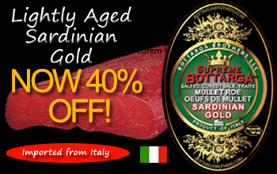
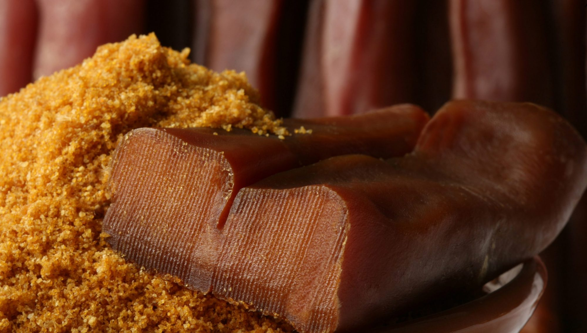

Partagez votre création
Vous avez une recette de poutargue ?
Nous aimons entendre notre communauté. Si vous avez découvert une nouvelle façon de déguster la poutargue, nous serions ravis de la présenter ici.
Envoyez-nous votre recette